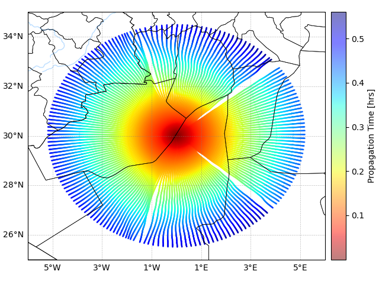
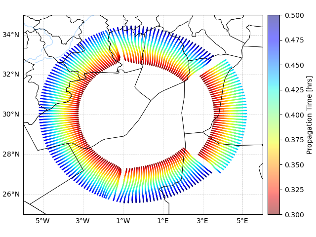

Visualization
Several visualization methods from infraga plot were included in the Quickstart and additional detail of these methods is summarized below. The list of available visualizations can be printed to screen using infraga plot --help,
Usage: infraga plot [OPTIONS] COMMAND [ARGS]... infraga plot - visualization functions for atmospheric data and infraga results Options: -h, --help Show this message and exit. Commands: atmo Visualize information about an atmospheric atmo_file azimuthal Visualize results for a single azimuth simulation eig_wvfrms Visualize eigenrays and predicted waveform eigenrays Visualize eigenray results and predicted arrival information map Visualize results on a cartopy map
Atmosphere and Waveguides
The adiabatic sound speed and ambient winds for a given atmospheric specification can be visualized using, infraga plot atmo --atmo-file ToyAtmo.met as noted in the Quickstart. This analysis is useful prior to running full ray tracing simulations to identify what waveguides are present in the atmospheric structure. In the limit of the effective sound speed, a ray path launched at inclination angle \(\vartheta\) in direction \(\varphi\) will be refreacted back towards the ground at an altitude for which \(c_\text{eff} \left( z, \varphi \right) \geq \frac{ c_\text{eff} \left( z_\text{grnd}, \varphi \right) }{\cos \vartheta}\). The right panel of the figure identifies likely waveguide structure by showing the lowest altitude for which this condition is satisfied.
{kind=link}
The other options in this visualization method allow one to cut the maximum altitude of the atmosphere data and to specify the file format as discussed in Atmospheric Data.
Azimuthal Propagation
For propagation paths confined to a single launch azimuth, the visualization of propagation results can be done using the infraga plot azimuthal methods. The full usage and plotting option info for this function can be displayed using the --help parameter flag.
Usage: infraga plot azimuthal [OPTIONS] Visualize propagation results for a single azimuthal angle simulation Plotting Options: inclination Launch inclination angle celerity Arrival celerity (horizontal group velocity) reduced-time Reduced arrival time (relative to --reduced-tm-vel) turning-ht Turning height trace-velocity Trace velocity back-azimuth Back azimuth (not available for 2d geometry) amplitude Transport equation + absorption losses Examples: infraga plot azimuthal --atmo-file ToyAtmo.met --y-axis-option celerity infraga plot azimuthal --atmo-file ToyAtmo.met --y-axis-option reduced-time --cmap-option trace-velocity Options: --atmo-file TEXT Atmospheric atmo_file file --arrivals TEXT Arrivals file from the simulation (optional) --ray-paths TEXT Ray path file from the simulation (optional) --y-axis-option TEXT Lower axis option (see usage info below) --cmap-option TEXT Low axis cmap option (see usage info below) --reduced-tm-vel FLOAT Reference velocity for reduced time option --tr-vel-ref FLOAT Reference velocity for trace velocity calculation --plot-amplitudes BOOLEAN Option to plot amplitude along rays --figure-out TEXT Name of output figure -h, --help Show this message and exit.
The y-axis and colormap variables for the lower panel can be specified from the above list of options and an example below shows the celerity and trace velocity characteristics of the arrivals.
{kind=link}
The trace velocity is computed using \(c_\text{tr} = \frac{c_0}{\cos \vartheta_\text{in}}\) where \(c_0\) is the sound speed at the ground surface (defaults to 330 m/s but can be specified through --tr-vel-ref) and \(\vartheta_\text{in}\) is the inclination angle of the incident arrival (spherical geometry and terrain interactions can lead to scenarios where the launch inclination and arrival inclination differ). The reduced time visualization computes the arrival time relative to that associated with some reference velocity, \(\tau_\text{rdcd} = t - \frac{r}{c_\text{ref}}\) where \(c_\text{ref}\) defaults to 300 m/s but can be specified using --reduced-tm-vel and \(r\) is the range of the arrival.
Multi-Azimuth Data on a Map
For multi-azimuth simulations, the predicted intercepts of ray paths with the ground surface can be visualized to show where ground-based observations are likely to detect signals. For spherical geometry simulations such predictions can be combined with Cartopy to visualize simulation results including country borders, coastlines, etc. using infraga plot map.
Usage: infraga plot map [OPTIONS]
Visualize arrivals or ray paths computed using infraga spherical methods on
a Cartopy map
Examples:
infraga plot map --arrivals ToyAtmo.arrivals.dat --plot-option amplitude --title 'Toy Atmo arrival amplitudes' --figure-name ToyAtmo.arrivals.png
infraga plot map --arrivals ToyAtmo.arrivals.dat --plot-option celerity --title 'Toy Atmo arrival celerity' --figure-name ToyAtmo.celerities.png
infraga plot map --ray-paths ToyAtmo.raypaths.dat --title 'Toy Atmo ray paths' --figure-name ToyAtmo.raypaths.png
Options:
--arrivals TEXT Arrivals file from an infraga-sph simulation
--ray-paths TEXT Ray path file from an infraga-sph simulation
--plot-option TEXT Parameter to visualize for arrivals
('amplitude', 'turning-height', 'celerity', or
'none')
--figure-out TEXT Name of output figure
--rcvrs-file TEXT File containing receiver locations (optional)
--title TEXT Title for the figure
--start-time FLOAT Propagation time [hours] for plotting sub-set
of data
--end-time FLOAT Propagation time [hours] for plotting sub-set
of data
--include-absorption BOOLEAN Include Sutherland & Bass losses
--offline-maps-dir TEXT Use directory for offline cartopy maps
-h, --help Show this message and exit.
Currently the plotting options include amplitude, turning height, and celerity (also a ‘none’ option that doesn’t include a colormap at all). A receivers file can be included that includes latitude and longitude information of nearby receivers that will be visualized on the map as well.
{kind=link}
In addition to simulating the visualization of ray path intercepts at the ground surface, visualization of full ray paths can be completed using this mapping function. Consider running a simulation of propagation at multiple azimuths using a single inclination angle,
infraga sph prop --atmo-file ToyAtmo.met --inclination 10.0 --az-min -180 --az-max 179.0 --az-step 2 --max-rng 500.0
The visualization of these ray paths can be used to visualize the angular extent of the waveguides at this inclination,
infraga plot map --ray-paths ToyAtmo.raypaths.dat
{kind=link}
Lastly, start and end times of ray paths and arrivals to include in a visualization can be specified. In the above result, propagation is shown from 0 to a bit more than 0.5 hours after the event. If only some portion of these times are of interest, one can limit the times in the visualization as,
infraga plot map --ray-paths ToyAtmo.raypaths.dat --start-time 0.3 --end-time 0.5
{kind=link}
Similar proapgation time limits can be used in visualization of the arrival data. Such a method was applied to analysis of the Hunga Tonga eruption infrasound propagation. The below animation frame shows arrival predictions using --plot-option None to only show arrival locations on the globe some time after the eruption. The faster stratospheric waves can be seen separating from the slower thermospheric energy for propagation to the west.
{kind=link}
Eigenrays
Eigenrays are those propagation paths connecting specific source-receiver geometries and provide predictions of when energy will arrive at the receiver and what its characteristics will be. Results of infraga sph eigenray simulations can be visualized using infraga plot eigenray. Running this method’s usage info:
Usage: infraga plot eigenray [OPTIONS]
Visualize results for eigenray analysis
Plotting Options:
inclination Launch inclination angle
celerity Arrival celerity (horizontal group velocity)
turning-ht Turning height
trace-velocity Trace velocity
back-azimuth Back azimuth (not available for 2d geometry)
amplitude Transport equation + absorption losses
Examples:
infraga plot eigenray --atmo-file ToyAtmo.met
infraga plot eigenray --atmo-file ToyAtmo.met --y-axis-option trace-velocity
Options:
--atmo-file TEXT Atmospheric specification file
--arrivals TEXT Arrivals file from an 'eigenray' simulation (optional)
--eigenrays TEXT Eigenrays file from an 'eigenray' simulation
(optional)
--y-axis-option TEXT Lower axis option (see usage info below)
--tr-vel-ref FLOAT Reference velocity for trace velocity calculation
--figure-out TEXT Name of output figure
-h, --help Show this message and exit.
The resulting visualization shows the ray path geometry as well as the arrival time for each eigenray contribution as well as some characteristic of the arrival. The default plotting option is the launch inclination, but others can be used as summarized in the usage. The trace velocity reference can be modified using --tr-vel-ref similar to the azimuthal visualization method above. There is not colormap option for eigenray visualization because the color of the points indicates which propagation path geometry they correspond to.
{kind=link}
Eigenrays with Waveforms
The Python wrapper that combines eigenray and weakly non-linear waveform computation produces a set of eigenrays and a waveform predictions for each that can be combined to estimate the arrival signal at the receiver. Visualization of these results can be done with infraga plot eig_wvfrm and has some features of both the azimuthal and eigenray methods.
Usage: infraga plot eig_wvfrms [OPTIONS]
Visualize results for combined eigenray/waveform analysis
Plotting Options:
trace-velocity Trace velocity
back-azimuth Back azimuth
amplitude Transport equation + absorption losses
Examples:
infraga plot eig_wvfrms --atmo-file ToyAtmo.met
infraga plot eig_wvfrms --atmo-file ToyAtmo.met --y-axis-option trace-velocity --cmap-option amplitude
Options:
--atmo-file TEXT Atmospheric specification file
--eigenrays TEXT Eigenrays file from an 'eig_wvfrm' simulation
--wvfrms TEXT Waveforms file from an eig_wvfrm simulation
--tr-vel-ref FLOAT Reference velocity for trace velocity calculation
--y-axis-option TEXT Arrival parameter to plot on y-axis
--cmap-option TEXT Arrival parameter to plot on colormap
--figure-out TEXT Name of output figure
-h, --help Show this message and exit.
The visualization includes three panels: the ray path geometry, the waveform prediction, and the eigenray characteristics. Unlike the eigenray-only visualization, a colormap is enabled to show multiple characteristics of the arrivals. The visualization can be run using the generating atmospheric file or directly specifying the eigenray and waveform output files (useful if a custom --output-id is used in analysis).
{kind=link}